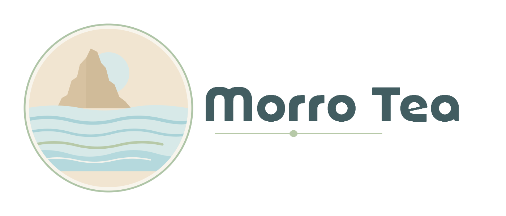
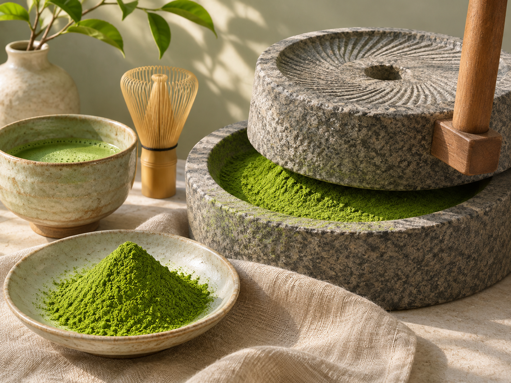
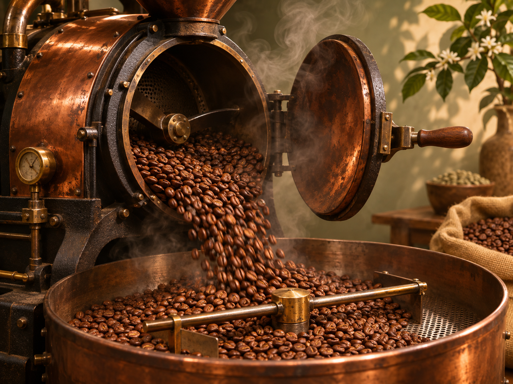
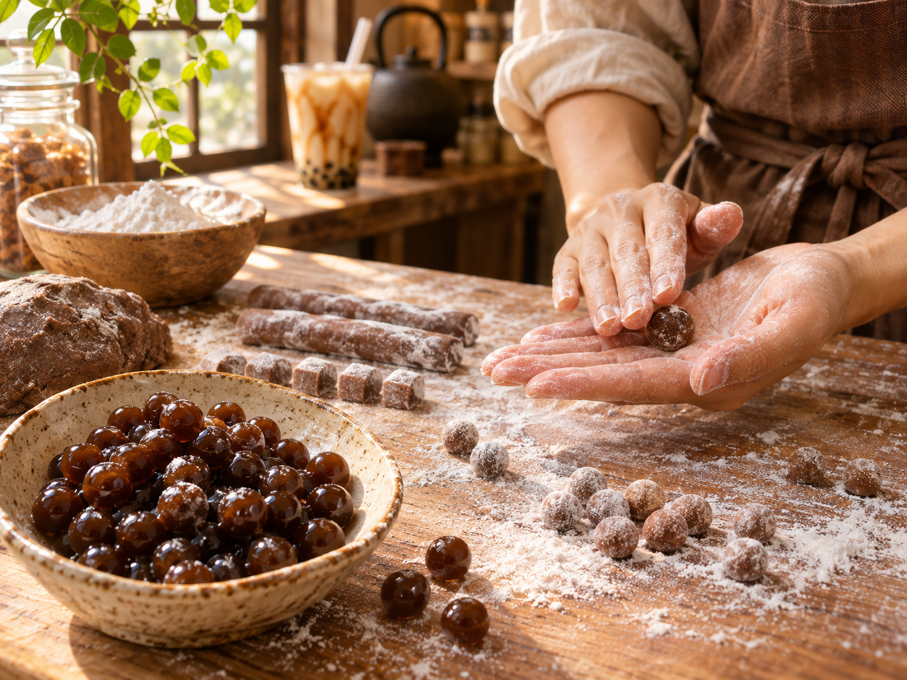

Matcha from Japan
Freshly ground green tea leaves are sourced from the mountains of Uji, Japan.

A sip of coastal calm in every cup
123 Happy Ave, San Luis Obispo, California
(805) 756-1108

Freshly ground green tea leaves are sourced from the mountains of Uji, Japan.

Our beans are roasted to perfection here in Morro Bay for the richest flavors.

Our signature tapioca pearls are made fresh daily using traditional methods.